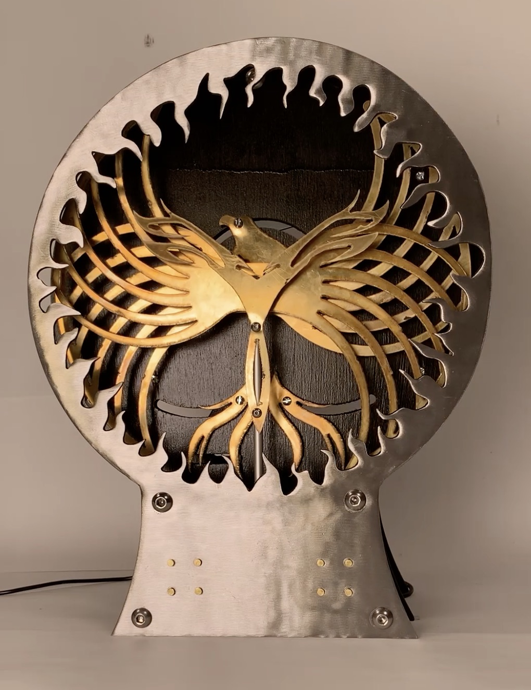
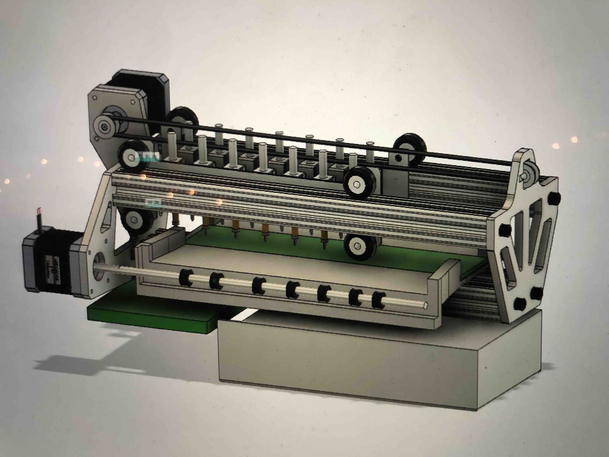
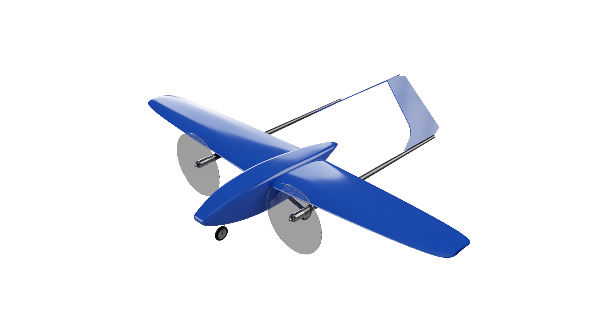
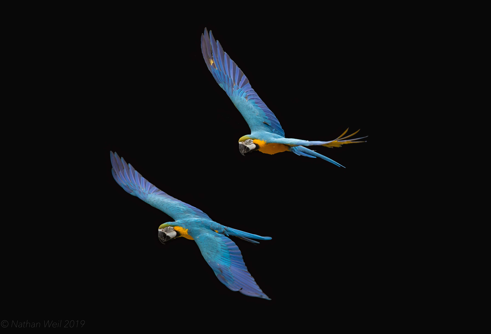
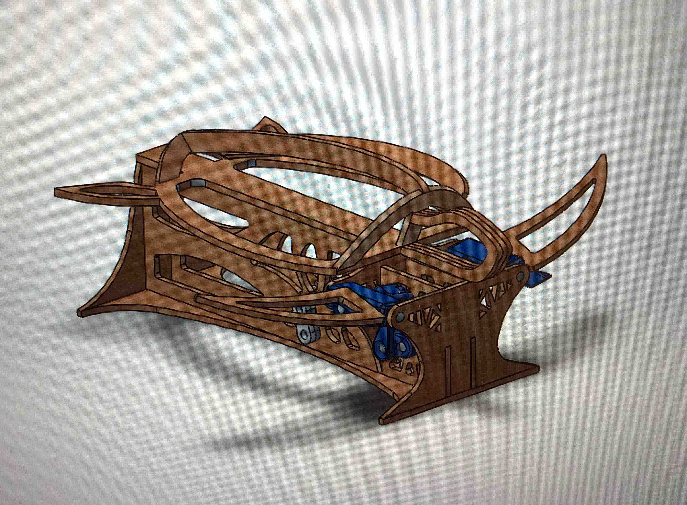
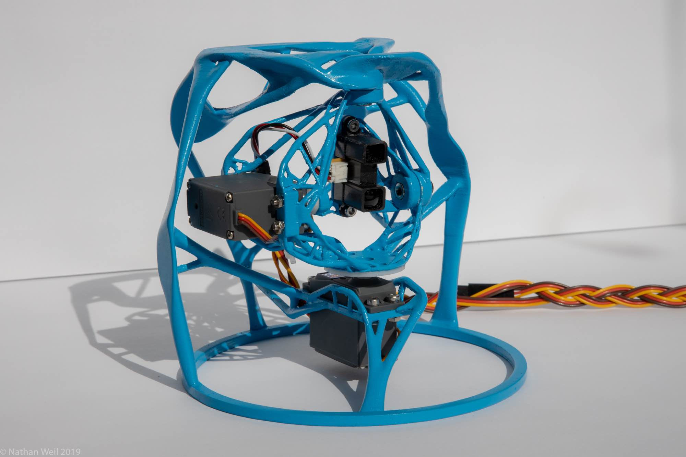

Astrophotography
Mechanical Design • Digital Photography • Astronomy

Ring of Fire
Mechanical Design • Kinetic Art

Braille Printer (In Progress)
Mechanical Design • Mechatronics • Generative Design
Rocketry (In Progress)
Composites • Structures

Design Build Fly (In Progress)
Composites • Systems • Leadership

Photography
Digital • Astro • Aerial

Sea Turtle Kinetic Sculpture
Mechanical Design • Kinetic Art

3d Scanner
Generative Design • Mechanical Design
© Nathan Weil. All rights reserved.